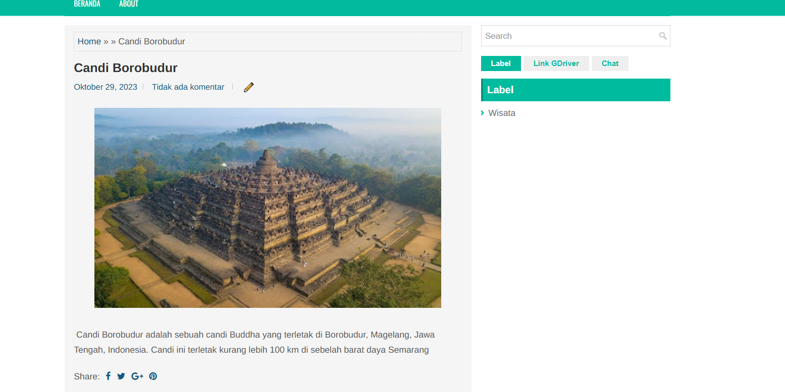

Website Blog Wisata Indonesia
Website blog informasi wisata yang dibuat untuk menyajikan berbagai destinasi wisata di Indonesia melalui artikel yang informatif, sederhana, dan mudah digunakan oleh pengunjung.


Tentang Project
Website Blog Wisata Indonesia merupakan website informasi yang dibuat untuk memperkenalkan berbagai destinasi wisata yang ada di Indonesia.
Website ini menyajikan informasi wisata dalam bentuk artikel sehingga pengunjung dapat menemukan berbagai referensi destinasi wisata dengan lebih mudah.
Tujuan Pengembangan
Website ini dikembangkan sebagai media informasi digital yang dapat membantu pengunjung memperoleh informasi mengenai destinasi wisata di Indonesia melalui penyajian artikel yang sederhana dan terstruktur.
Fitur Utama
Teknologi yang Digunakan
Pengembangan website menggunakan Blogger sebagai platform blog, HTML untuk struktur halaman, CSS untuk tampilan dan desain, serta konsep responsive web agar website dapat digunakan pada berbagai ukuran perangkat.